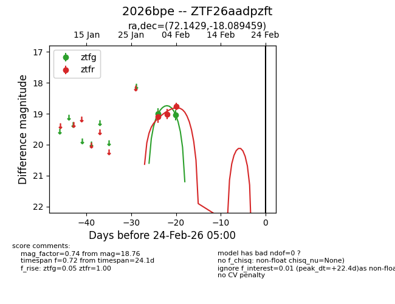
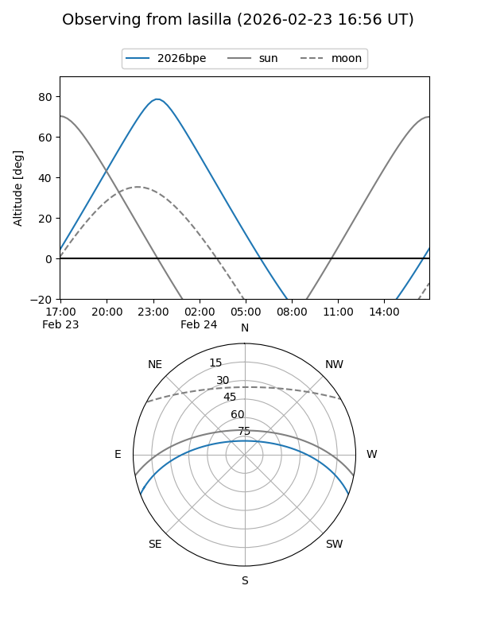
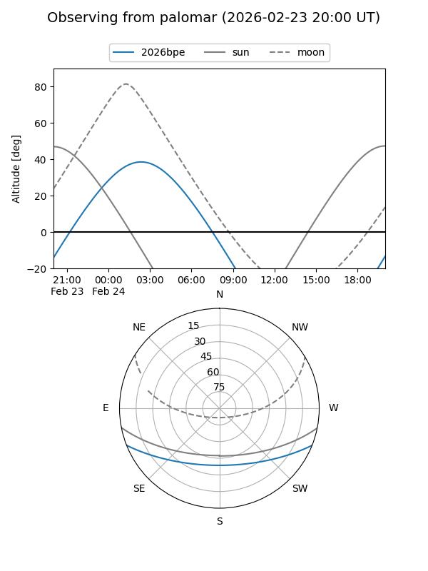

2026bpe
Target 2026bpe at 2026-02-24 09:08
Aliases and brokers:
FINK: link
Lasair: link
ALeRCE: link
TNS: link
YSE: link
alt names
ZTF26aadpzft (ztf,fink_ztf)
2026bpe (tns,yse)
Coordinates:
equatorial (ra, dec) = 72.1429,-18.08946
equatorial (HMS+DMS) = 04:48:34.30,-18:05:22.05
galactic (l, b) = (216.7782,-35.00950)
Flags:
Photometry:
last ztfg=19.05, ztfr=18.76
2 ztfg, 3 ztfr detections
Lightcurve

Visibility


Additional plots